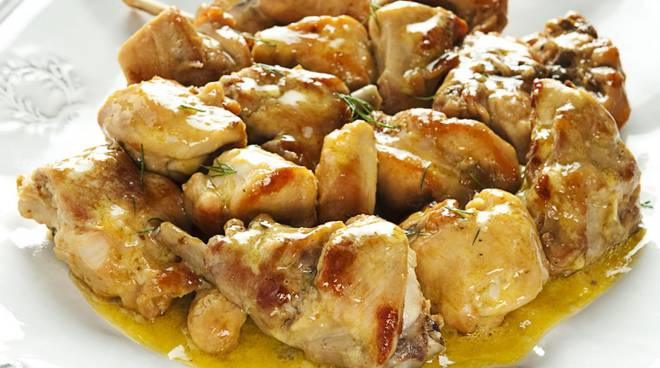

CONIGLIO ALLA REGGIANA
SECONDI PIATTI

- Descrizione
- Il coniglio reggiano è un piatto inserito nell'elenco dei prodotti agroalimentari tradizionali dell'Emilia Romagna.
- Ingredienti
- - 1 coniglio da circa 1 kg
- - 100 g di lardo
- - 50 g di burro
- - 2 cipolle piuttosto grandi
- - 1 spicchio d'aglio
- - 1 cucchiaio da cucina di concentrato di pomodoro
- - prezzemolo
- - mezzo bicchiere di vino bianco secco
- - olio extravergine d'oliva
- - sale
- - pepe
- Preparazione
- Dividete il coniglio in 12 pezzi in modo da garantire a tutti la stessa quantità.
Una volta tagliato e lavato, mettetelo in una casseruola insaporendolo con un po' di sale e copritelo per una decina di minuti. Questo procedimento aiuterà la carne a privarsi dell'acqua in eccesso.
- A questo punto tagliate le cipolle a fettine sottili sottili e fatele rosolare con un fondo d'olio, di burro e di lardo in una “casseruola” preferibilmente di coccio. Aggiungete i pezzetti di coniglio, alzate la fiamma e sfumate con mezzo bicchiere di vino bianco secco. Lasciate che il coniglio prenda colore e, in seguito, aggiungete un cucchiaio da cucina di concentrato di pomodoro. Aggiungete mezzo bicchiere di acqua e proseguite la cottura abbassando la fiamma.
Passata una buona mezz'ora e dopo aver preparato un trito con uno spicchio d'aglio e di prezzemolo, cospargete il vostro coniglio e proseguite la cottura per altri trenta minuti.
Torna alla pagina iniziale
by Bartoli Matteo